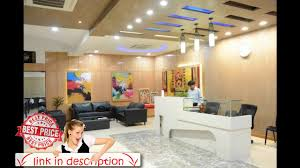
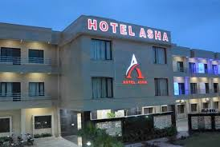

Hotel Rajdhani in Kannauj.
Hotels with Address, Contact Number, Photos, Maps. View Hotel Rajdhani, Kannauj on Justdial.
Celebrated as one of the city's best is, Hotel Rajdhani in Kannauj.
The hotel is strategically located in Saraimira. Having been established in the year 2012, this hospitality destination has grown to become the ideal place for travelers and those on business to feel at home when in the city. Many have also reviewed the hotel to be among the sought after Hotels in Kannauj. The hotel functions from - all through the week. Catering to the convenience of its guests, the hotel makes available various payment methods to ease out the payment process like, Cash, Master Card, Visa Card, Debit Cards, Credit Card.

With the aim of pampering its guests to a thrilling experience, the hotel features a plethora of services which include Number Of Rooms 20 Rooms, Laundry Service , Air Conditioned Rooms , Cable/satellite Tv Service , Banquet Facilities , Conference Room(s) , Check Out Time 12:00, Distance In (kms) From The Airport 150 Km, Valet Parking , Wedding Services .
The hotel is also classified as a destination to resort to when in need of Hotels, AC Banquet Halls.
When looking to satiate one's cravings, the in-house restaurant is where one can choose to either dine-in or order food online at the single click of a button.
One can browse through the 9 photographs attached above, to better understand the space through these visual references.
Over the years patrons have been constantly rating the hotel based on their experiences which now brings the property to a 3.9 rating value.
It has a total of 0+ ratings.
When in the city, be sure to enjoy a stay here as it is known to be one of the leading Hotels In Saraimira.
One can follow the address which is - G.T Road, Saraimira, Kannauj-209727,Opposite Arshi Hospital,Saraimira,Kannauj-209727 to visit the hotel.
An easier way to get in touch with them is through their official telephonic contact - +(91)-9455281000,9455283000.
There is a saying that "there is no hospitality like understanding". This is just how we would like you to remember us. We know that when you are away from home and in a new city, there are a lot many things that you wish for-a feeling of being well looked after an of course an ambience that puts you totally at ease. We understand your feelings and keeping the same in mind we have put together everything in hotel rooms in �Perfume city Kannauj�. Therefore our first consideration in making your stay at our city memorable is to ensure that your hotel experience is absolutely up to your expectations and something beyond!
HOTEL ASHA rooms in Kannauj are thoughtfully designed to blend aesthetics, comfort and convenience.
A total number of 40 rooms are designed to meet every requirement. We are confident that our excellent services and beautifully done up rooms are sure to meet your approval.
If you would like your stay in the city to be a bit more special then the premium hotel room in Kannauj would be just perfect.
There are a total of 20 deluxe rooms, so in case you would like to ensure a premium experience for a group then you do not have to worry about room availability.
Organize the perfect business meet at our fabulous city, or ensure a premium experience for a group of friends or family, ASHA

HOTEL will be the right choice to meet your requirements after and of course you can book a single deluxe room too and enjoy the facilities we have on offer for our premium guests.